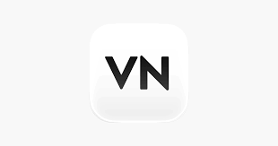

A portfolio of two end-to-end analytics projects. Each project page is built from the supplied project documentation and the images included with the project files.

Open a project to read its business context, data understanding, cleaning work, KPIs, analytical questions, findings, recommendations and visual evidence.
An end-to-end logistics analytics project covering 11 datasets, data preparation, relationship validation, SQL, Power BI, DAX, business analysis and recommendations.
A business and data intelligence assessment covering customer and transaction understanding, analytical questions, KPI definitions, dashboard planning and the initial analysis plan.
A healthcare analytics project covering patient demand, clinical patterns, workforce, financial performance, patient satisfaction, data quality and management recommendations.